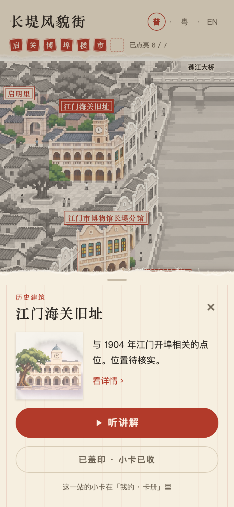
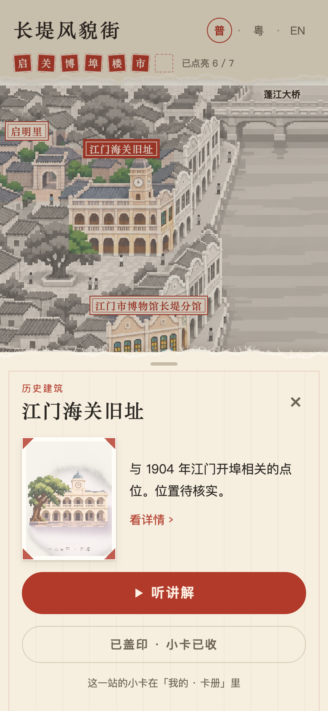

同一点位（江门海关旧址，已盖印），同一套纸质界面，只换配图的呈现。网址加 ?pic=crop / ?pic=mount / ?pic=stamp 可在真页面里切换。
?pic=crop
?pic=mount
?pic=stamp


实景照片与手绘没有放进对比：仓库里没有已授权的实景照片（总清单 1.2、3.5 要求逐项核验授权），手绘需要新出一套图。B 的相框对两者都适用，素材到位后替换 data/points.js 里的 card 路径即可。
data/points.js
card